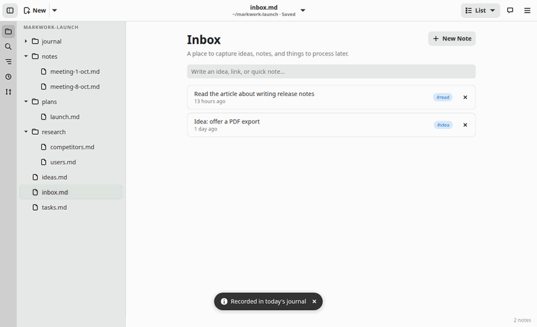

Workspace
Inbox
A Markdown file with layout: list opens as an inbox: a place to capture ideas, links, and quick notes to process later. Like a kanban board, its contents stay plain Markdown text.
File format
---
layout: list
---
# Inbox
A place to capture ideas, notes, and things to process later.
- Idea: Delta could use SQLite #idea [created:: 2026-10-07 14:22]
item notes (indented lines)
- Read the article about the GNOME HIG #read [created:: 2026-10-07 13:32]- Every list item is one note. The
#heading and the paragraph before the first item become the title and the description of the page. #tagis shown as a chip;[created:: date time]is the capture time used for the age label ("10 minutes ago", "1 hour ago", "3 days ago"; more than a week becomes a date). A note without a time is still valid.- Indented lines below an item are the contents of the note; other text below the list is preserved as it is.

Working with the inbox
- Quick capture: type in the topmost field and press Enter. The note goes in at the top with the current time.
- New Note opens a dialog with a title, tags, and notes. Click a note to edit it; its capture time is kept.
- The ✕ button removes a note. Undo and redo apply to every change.
- Ctrl+Shift+B switches between the inbox view and the text.
Creating an inbox
- The ☰ menu → New Inbox creates an empty inbox that has no name yet.
- Right-click in the file tree → New Inbox… creates it right away as a file in that folder.